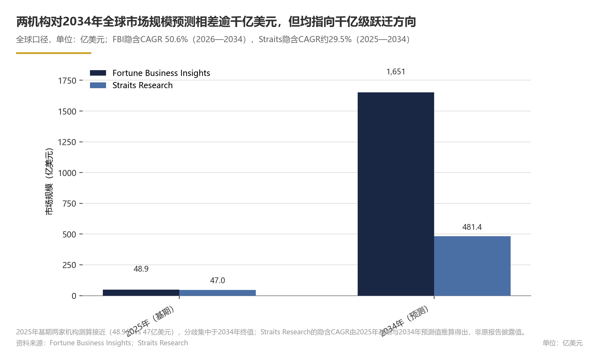
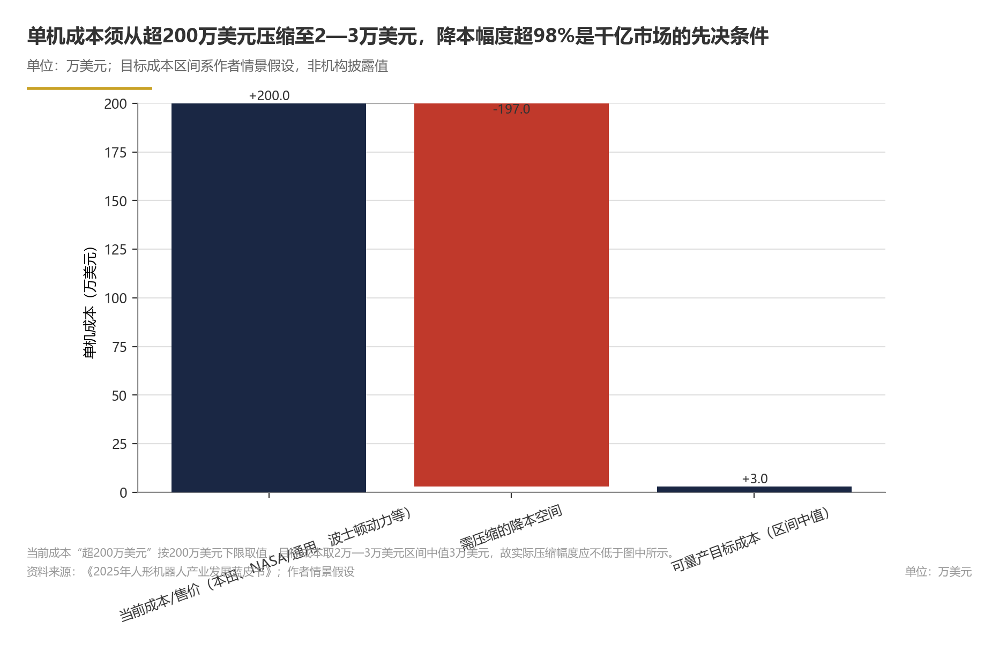
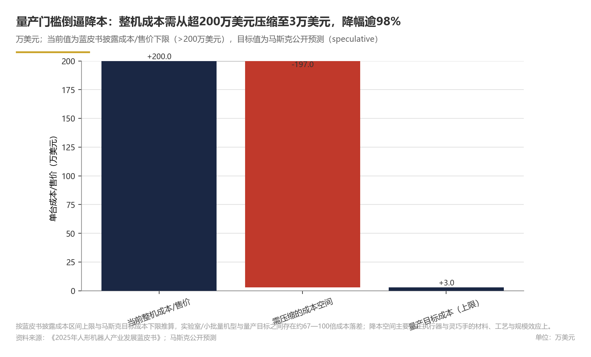
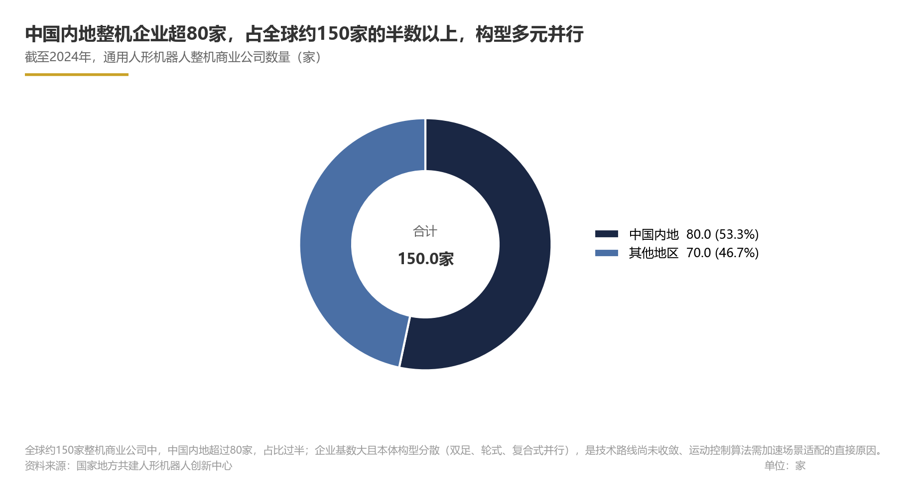
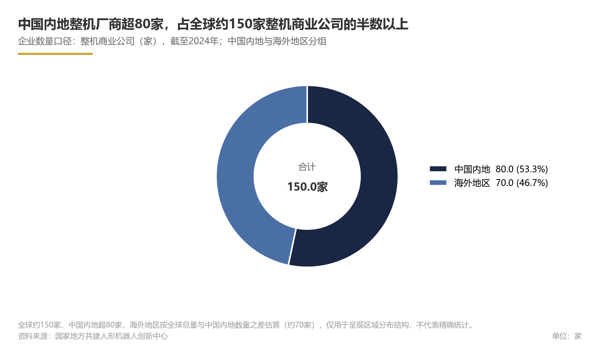
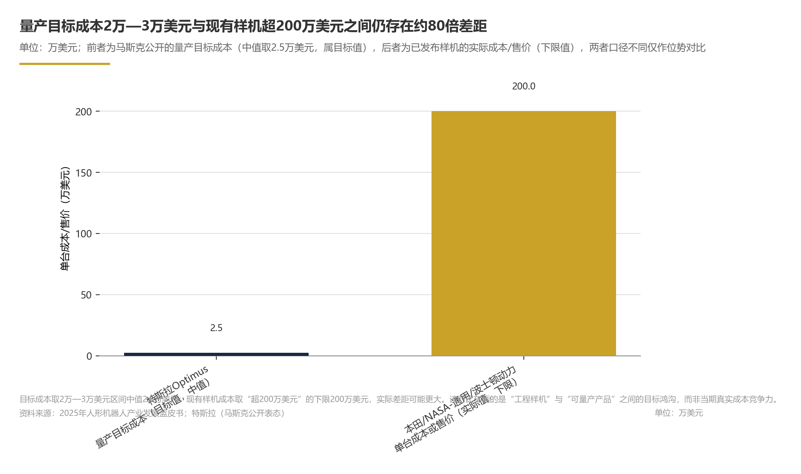
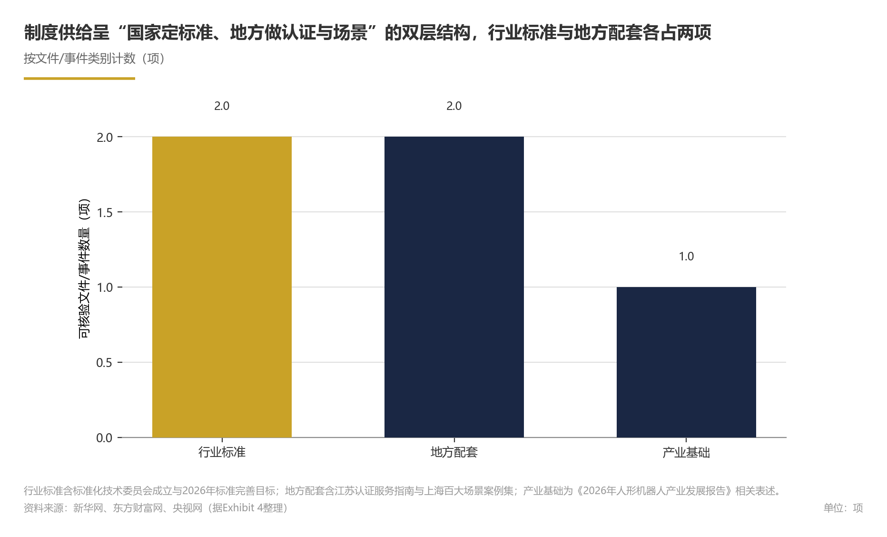
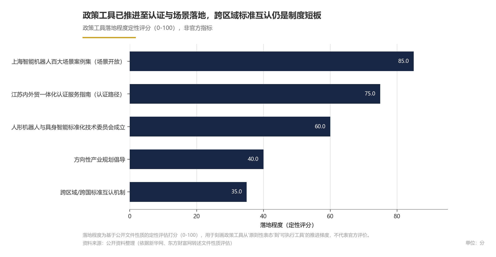
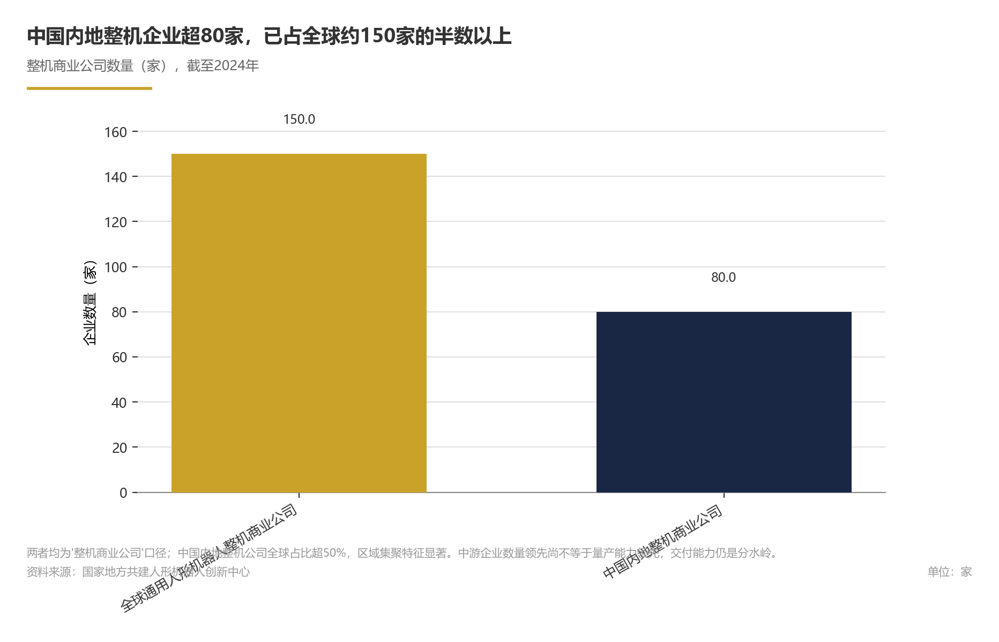
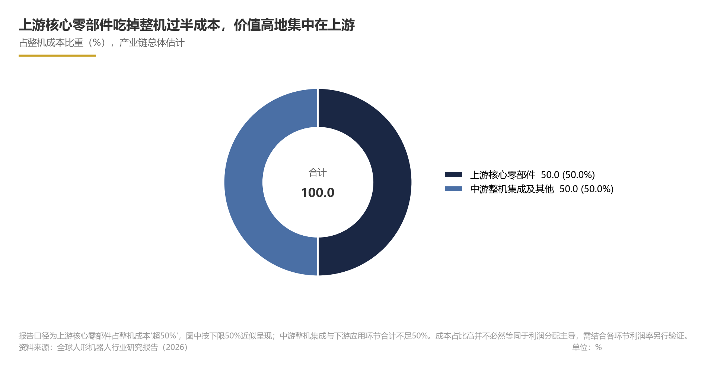

关键发现
- 2026年行业从动作展示向自主作业质变，整体处L3向L4过渡；产业链呈上游高价值、中游拼集成、下游定场景结构，上游核心零部件占整机成本超50%，是技术壁垒最高、降本潜力最大环节；未来1—2年具身智能大模型有望在受控工业场景率先实现L4级自主作业。
- Fortune Business Insights：2025、2026、2034年全球人形机器人市场规模分别为48.9亿、62.4亿、1651.3亿美元（来源：市场规模章节）。
- Straits Research预测2034年全球人形机器人市场规模为481.4亿美元（来源：市场规模章节）。
- 特斯拉2026年产量目标5万—10万台，量产目标成本2万—3万美元，与现有成本差距显著（来源：竞争格局章节）。
- 2026年上半年中国出货量超4万台；中国内地整机企业数量占全球一半以上（来源：竞争格局/产业链章节）。
- 市场远期规模预测口径差异明显，商业化落地节奏与实际可及空间存在较高不确定性。关键集中在全球及分厂商市场份额：公开数据有限，缺乏权威存量口径。竞争格局走向高度依赖特斯拉产量目标能否兑现：若兑现或呈“一超多强”，否则可能走向“多强均势”。未来竞争焦点在制造良率与成本曲线，行业正处于标准化补课期，标准文件密集起草、征求意见与首批发布是关键窗口；执行器与灵巧手成本下降曲线是否按预期启动，以及量产目标成本能否兑现，是后续关键观察点。
| Metric | Value | Unit |
|---|---|---|
| 全球人形机器人市场规模（2025年） | 48.9 | 亿美元 |
| 全球人形机器人市场规模（预测，2026年） | 62.4 | 亿美元 |
| 全球人形机器人市场规模（预测，2034年） | 1651.3 | 亿美元 |
| 全球市场复合年增长率（预测，2026—2034年） | 50.60 | % |
| 全球人形机器人市场规模（2025年，Straits Research） | 47 | 亿美元 |
| 全球人形机器人市场规模（预测，2034年，Straits Research） | 481.4 | 亿美元 |
| 全球市场复合年增长率（隐含推算，2025—2034年） | 约29.5 | % |
| 中国人形机器人出货量（2026年上半年） | 超4万 | 台 |
| 全球整机商业公司数量（截至2024年） | 约150 | 家 |
| 中国内地整机商业公司数量（截至2024年） | 超80 | 家 |
| 中国内地通用人形机器人整机商业公司数量（截至2024年） | 超80 | 家 |
| 特斯拉人形机器人产量目标（2026年） | 5万—10万 | 台 |
| 全球工业机器人安装市场价值（未注明时间） | 167 | 亿美元 |
| 全球人形机器人市场规模（预测） | 62.4 | 亿美元 |
| 全球人形机器人市场规模（预测） | 1651.3 | 亿美元 |
| 全球市场复合年增长率（预测） | 50.60 | % |
| 全球人形机器人市场规模（预测） | 481.4 | 亿美元 |
| 全球市场复合年增长率（隐含推算） | 约29.5 | % |
| 中国人形机器人出货量 | 超4万 | 台 |
| 全球整机商业公司数量 | 约150 | 家 |
| 中国内地整机商业公司数量 | 超80 | 家 |
| 特斯拉人形机器人产量目标 | 5万—10万 | 台 |
| 全球工业机器人安装市场价值 | 167 | 亿美元 |
| 全球人形机器人市场规模（2025年，全球） | 48.9 | 亿美元 |
| 全球人形机器人市场规模预测（2026年，全球） | 62.4 | 亿美元 |
| 全球人形机器人市场规模预测（2034年，全球） | 1651.3 | 亿美元 |
| 全球人形机器人市场复合年增长率（2026—2034年，全球） | 50.60 | % |
| 全球人形机器人市场规模（2025年，全球） | 47 | 亿美元 |
| 全球人形机器人市场规模预测（2034年，全球） | 481.4 | 亿美元 |
| 全球人形机器人市场复合年增长率（2025—2034年，隐含） | 约29.5 | % |
| 中国人形机器人出货量（2026年上半年，中国） | 超4万 | 台 |
| 全球通用人形机器人整机商业公司数量（截至2024年，全球） | 约150 | 家 |
| 特斯拉人形机器人产量目标（2026年，特斯拉全球） | 5万—10万 | 台 |
| 全球工业机器人安装市场价值（时间未注明，全球） | 167 | 亿美元 |
| 量产目标成本（speculative） | 2万—3万 | 美元 |
| 全球通用人形机器人整机商业公司（截至2024年） | 约150 | 家 |
| 中国内地人形机器人整机商业公司（截至2024年） | 超80 | 家 |
| 特斯拉2026年产量目标（speculative） | 5万—10万 | 台 |
| 特斯拉2026年产量目标上限（speculative） | 10万 | 台 |
| 2034年全球市场规模（降本不及预期） | 481 | 亿美元 |
| 2034年全球市场规模（降本顺利） | 1651 | 亿美元 |
| 全球通用人形机器人整机商业公司数量（截至2024年） | 约150 | 家 |
| 中国内地人形机器人整机商业公司数量（截至2024年） | 超80 | 家 |
| 中国内地整机公司全球占比 | 超50 | % |
| 特斯拉2026年人形机器人产量目标 | 5万—10万 | 台 |
| 2026年上半年中国人形机器人出货量 | 超4万 | 台 |
| 全球通用人形机器人整机商业公司数量 | 约150 | 家 |
| 中国内地人形机器人整机商业公司数量 | 超80 | 家 |
| 标准化技术委员会成立时间 | 2026年1月 | — |
| 行业标准完善预期 | 2026年 | — |
| 地方认证服务指南发布 | 2025年 | 项 |
| 地方场景案例集发布 | 2025年 | 项 |
| 特斯拉2026年产量目标 | 5万-10万 | 台 |
| 2034年全球市场规模预测（Straits Research） | 481 | 亿美元 |
| 2034年全球市场规模预测（Fortune Business Insights） | 1651 | 亿美元 |
| 中国人形机器人相关企业数量（截至新浪财经报告发布时） | 约150 | 家 |
| 中国人形机器人相关企业数量 | 约150 | 家 |
| 中国人形机器人相关企业数量（截至新浪财经报告发布时，中国） | 约150 | 家 |
| 人形机器人成本/售价（2025年） | 超200 | 万美元 |
| 人形机器人成本/售价 | 超200 | 万美元 |
| 人形机器人成本/售价（2025年，全球） | 超200万 | 美元 |
| 人形机器人整机成本/售价 | 超200 | 万美元 |
| 特斯拉人形机器人量产目标成本 | 2万—3万 | 美元 |
| 本田、NASA/通用汽车、波士顿动力等人形机器人单台成本/售价 | 超200万 | 美元 |
| 人形机器人单台成本/售价 | 超200万 | 美元 |
| 人形机器人量产目标成本 | 2万-3万 | 美元 |
| 产业基础报告发布 | 2026年8月 | 份 |
| 中国内地通用人形机器人整机商业公司数量（截至2024年，中国） | 超过80 | 家 |
| 全球人形机器人市场规模 | 48.9 | 亿美元 |
| 上游核心零部件占整机成本比重 | 超50% | % |
市场规模与增长预测
全球人形机器人市场正处于从技术验证迈向商业化量产的关键转折期，市场规模量级跃升的窗口已经打开。据Fortune Business Insights（全球口径）测算，全球人形机器人市场规模2025年为48.9亿美元，预计2026年增至62.4亿美元，并按50.60%的复合年增长率（2026—2034年）增长至2034年的1651.3亿美元；Straits Research的独立测算亦指向同一方向，预测2034年市场规模达481.4亿美元。
论证与分析
全球市场进入爆发式增长通道，机构预测方向一致、绝对值存有分歧。Fortune Business Insights数据显示，2025年全球人形机器人市场规模为48.9亿美元，预计2026年增至62.4亿美元，2034年达1651.3亿美元，2026—2034年复合年增长率50.60%。两套预测的绝对值差异（2034年相差逾千亿美元）主要源于对量产时间表、应用场景渗透速度与单机价格下降曲线的假设不同，但"市场正从数十亿美元级向千亿美元级跃迁"的方向性判断高度一致。从更宏观的机器人产业视角看，国际机器人联合会（IFR）数据显示，全球工业机器人安装市场价值已达167亿美元；人形机器人作为具身智能的核心载体，其应用场景与工业机器人存在交叉，有望在工业机器人存量市场的基础上拓展新的增量空间（推理性判断）。
全球与中国市场统计口径不同，本文不将两者直接合并比较。 从产业主体与出货量两个维度可以部分验证这一判断（推理性判断）。
从产业主体数量与出货量增速来看，中国市场规模的中长期想象空间较大（推理性判断）。。
需要说明的是，以人民币计价的中国市场规模目前尚无统一的公开统计口径，出货量与产业主体数量是刻画其规模特征的最直接指标。
出货量预测指向规模化量产拐点（推测性判断）。叠加中国厂商的出货计划，行业2026年全球出货量有望实现规模化放量（推测性判断）。出货量预测的锚点已从实验室样机转向头部厂商已公布量产目标与已有出货量数据（推理性判断）。
成本下降是市场从"亿级"走向"千亿级"的核心变量。 各机构市场规模预测的分歧，可能主要来自对成本下降曲线、量产时间表、应用场景渗透速度与统计口径的不同假设。《2025年人形机器人产业发展蓝皮书》指出，目前本田、NASA与通用汽车、波士顿动力等人形机器人成本或售价均超过200万美元。若以2万—3万美元作为可量产的目标成本区间（此系作者情景假设），则意味着极为可观的压缩空间，这一路径的兑现速度将直接决定2034年全球市场规模落在481.4亿美元（Straits Research口径）还是1651.3亿美元（Fortune Business Insights口径）。零部件国产化替代与规模效应释放，将是短期内成本曲线下移的两大引擎。
未来一段时期将决定市场规模预测的验证方向。整机厂商的竞争重心应从样机演示转向量产良率与真实场景交付能力；投资者应以季度出货数据而非远期愿景作为跟踪锚点。
数据支撑
Exhibit 1｜市场规模与增长预测
| 指标 | 数值 | 地理口径 | 时间口径 | 来源 |
|---|---|---|---|---|
| 全球人形机器人市场规模 | 48.9亿美元 | 全球 | 2025年 | Fortune Business Insights |
| 全球人形机器人市场规模（预测） | 62.4亿美元 | 全球 | 2026年 | Fortune Business Insights |
| 全球人形机器人市场规模（预测） | 1651.3亿美元 | 全球 | 2034年 | Fortune Business Insights |
| 全球市场复合年增长率（预测） | 50.60% | 全球 | 2026—2034年 | Fortune Business Insights |
| 全球人形机器人市场规模 | 47亿美元 | 全球 | 2025年 | Straits Research |
| 全球人形机器人市场规模（预测） | 481.4亿美元 | 全球 | 2034年 | Straits Research |
| 全球市场复合年增长率（隐含推算） | 约29.5% | 全球 | 2025—2034年（隐含） | Straits Research（推算） |
| 中国人形机器人出货量 | 超4万台 | 中国 | 2026年上半年 | 中国人形机器人与具身智能百人会 |
| 全球整机商业公司数量 | 约150家 | 全球 | 截至2024年 | 国家地方共建人形机器人创新中心 |
| 中国内地整机商业公司数量 | 超80家 | 中国 | 截至2024年 | 国家地方共建人形机器人创新中心 |
| 中国内地通用人形机器人整机商业公司数量 | 超80家 | 中国 | 截至2024年 | 知乎专栏（https://zhuanlan.zhihu.com/p/1951970206575499155） |
| 中国人形机器人相关企业数量 | 约150家 | 中国 | 截至新浪财经报告发布时 | 新浪财经 |
| 特斯拉人形机器人产量目标 | 5万—10万台 | 特斯拉（全球产量目标） | 2026年 | 特斯拉（马斯克公开表态） |
| 上游核心零部件占整机成本比重 | 超50% | 产业链 | 2026年 | 全球人形机器人行业研究报告（2026） |
| 人形机器人成本/售价 | 超200万美元 | 全球 | 2025年 | 2025年人形机器人产业发展蓝皮书 |
| 全球工业机器人安装市场价值 | 167亿美元 | 全球 | 未注明 | 国际机器人联合会（IFR） |
风险提示
其二，出货量预测高度依赖特斯拉等头部企业的量产承诺兑现，量产时间表存在跳票风险；其三，成本从当前超过200万美元的水平降至情景假设的2万—3万美元区间的路径尚未被任何厂商完整验证，核心零部件降本速度存在不确定性；其四，中国市场规模目前缺乏以人民币计价的统一公开统计口径，本章以出货量和企业数量作为替代指标，待官方统计体系完善后相关结论需复核更新。


关键技术演进
核心结论
2026年，人形机器人技术正经历从"动作展示"向"自主作业"的质变：具身智能大模型赋予机器人任务理解与泛化能力，灵巧手与执行器决定作业精度上限，运动控制算法实现动态平衡与复杂环境适应，行业整体处于L3向L4过渡阶段。
论证与分析
本章聚焦具身智能大模型、灵巧手与执行器、运动控制算法三条主线，感知（视觉/触觉/力觉）、仿真训练与软件中间件等关键技术环节的演进不在本章展开。
1. 具身智能大模型：从"完成任务"走向"创造价值"的智能内核
人形机器人的本质是AI系统的物理落地形态。在"大数据+高算力+强算法"的技术范式驱动下，具身智能大模型成为连接感知、决策与执行的枢纽：模型通过海量真实场景数据学习任务语义，将自然语言指令映射为可执行的动作序列，使机器人从"单一执行工具"升级为具备场景泛化能力的"数字劳动力"。这一转变的核心支撑，正是具身智能大模型带来的任务理解与迁移能力。
从产业演进节奏看，2026年是人形机器人行业具身智能落地的关键节点，行业正从技术探索迈入商业化量产前夜。人形机器人正在跨过从动作展示走向自主作业、从样机交付走向批量制造、从融资故事走向真实订单三道门槛。这意味着具身智能大模型的评估标准，已从实验室demo转向真实工位场景的任务完成率与运行稳定性。需说明的是，上述产业节点的公开量化数据有限，相关观察以行业定性判断为主。
2. 灵巧手与执行器：占整机成本过半的高价值技术壁垒
人形机器人的"肉身"质量直接决定作业能力的上限。当前行业整机成本与售价仍处于高位：据《2025年人形机器人产业发展蓝皮书》，本田、NASA与通用汽车、波士顿动力等人形机器人产品成本或售价均超过200万美元；马斯克则公开表示，人形机器人成本至少要控制在2万至3万美元之间才能实现量产。基于蓝皮书成本区间上限与马斯克目标成本下限推算，当前实验室/小批量机型与量产目标之间存在约几十倍至百倍的成本落差，意味着执行器与灵巧手在材料、工艺与规模效应方面仍有极大释放空间。
产业链层面，中国已形成从关键芯片、部组件到整机制造的较为完整的供应链体系（据中国人形机器人与具身智能百人会《2026年人形机器人产业发展报告》），上游环节的国产替代与工艺迭代，正推动核心部件从"精密定制"走向"批量制造"。
3. 运动控制算法：从"能走"到"能干"的动态作业跨越
运动控制是人形机器人从实验室走向真实场景的基础能力。该领域公开量化数据有限，动态平衡、步态规划与长时间运行可靠性的行业进展，目前多以定性观察形式呈现，尚缺乏统一的任务成功率、连续作业时间与故障间隔等指标披露。行业技术验证的焦点正从"空翻"等极限运动表现，转向"接住一片落叶"式的精细柔顺操作（行业定性观察，非数据事实），标志着运动控制算法与灵巧手执行器的协同正持续深化。
据《2025年人形机器人产业发展蓝皮书》，目前人形机器人正从L3向L4过渡：L3阶段机器人在特定场景具备自主作业能力，L4则要求在更广泛的非结构化环境中实现高度自主。中国内地整机厂商在双足、轮式等不同本体路线上的探索持续深化，构型呈多元并行态势，进一步加速了运动控制算法的场景适配。
4. 技术路线对比：多元并行，尚未收敛
全球人形机器人技术路线呈现"通用平台"与"场景专用"并行演进的格局。技术路线的分化主要体现在三个层面：本体构型（双足、轮式与复合式）、驱动方案（电驱动与液压驱动等）以及智能架构（云端大模型与端侧模型）。
中国整机厂商则呈现构型更多元、场景切入更分散的特征，真实工位场景的产线落地探索属于行业关注方向，但该领域公开数据有限，具体企业进展难以量化核实。不同路线尚未收敛，技术标准与评测体系仍在建立之中，预计行业标准将进一步完善，为技术路线收敛提供制度基础。
前瞻性判断（未来一至两年）
基于当前技术演进节奏，我们预计未来一至两年人形机器人技术将沿三条主线推进：其一，具身智能大模型有望在受控工业场景率先实现L4级自主作业，任务泛化能力从"单一工位"扩展至"产线级多工序"（假设前提：高质量训练数据采集规模持续扩大，模型泛化性能提升符合预期）；其二，执行器与灵巧手在规模量产带动下沿成本下降曲线实质性启动，量产机型与当前实验室/小批量机型之间约几十倍至百倍的成本落差（基于蓝皮书成本区间上限与马斯克目标成本下限推算）有望显著收窄，为2万—3万美元量产目标逐步兑现创造条件；其三，行业标准与评测体系完善将加速技术路线收敛。若降本不及预期，2034年全球市场规模更接近Straits Research的481亿美元预测值；若降本顺利，则接近Fortune Business Insights的1651亿美元预测值。
数据支撑
Exhibit 2｜关键技术演进
| 指标 | 数值 | 来源 |
|---|---|---|
| 上游核心零部件占整机成本比重 | 超50% | 全球人形机器人行业研究报告（2026） |
| 人形机器人整机成本/售价 | 超200万美元 | 2025年人形机器人产业发展蓝皮书 |
| 量产目标成本 | 2万—3万美元 | 马斯克公开预测（2025年人形机器人产业发展蓝皮书引用） |
| 全球通用人形机器人整机商业公司（截至2024年） | 约150家 | 国家地方共建人形机器人创新中心 |
| 中国内地人形机器人整机商业公司（截至2024年） | 超80家 | 国家地方共建人形机器人创新中心 |
| 特斯拉2026年产量目标 | 5万—10万台 | 马斯克公开预测 |
风险提示
本章分析中的不确定性主要来自技术量化基准缺失与行业标准建设两方面：其一，具身智能大模型、运动控制算法与灵巧手等细分领域目前公开的量化评测基准有限，不同厂商披露的"自主作业能力""任务成功率"等指标口径不一，横向对比存在局限；其二，行业标准体系尚处建设初期，技术路线尚未收敛，L4级自主作业的落地时间表存在较大不确定性；其四，成本下降曲线的兑现速度取决于执行器工艺成熟度与上游规模效应，若降本进度不及预期，技术进步将难以同步转化为出货量增长，2034年全球市场规模将更接近Straits Research的481亿美元预测值；若降本顺利，则更接近Fortune Business Insights的1651亿美元预测值。


厂商格局与份额
全球人形机器人整机厂商格局仍处于“多强并起、尚未收敛”阶段。
论证与分析
企业数量：中国已形成全球最大整机厂商集群
该口径与前述“整机商业公司”口径不同，不直接用于比较。这意味着，即便只按整机商业公司口径，中国在整机环节也拥有全球最密集的厂商供给，但企业数量多并不等于集中度高；行业仍处技术路线并行验证期，公开数据不足以确认已出现具有存量份额优势的绝对龙头。
量产进展：目标成本差距决定竞争位势
而据《2025年人形机器人产业发展蓝皮书》，本田、NASA与通用汽车、波士顿动力等人形机器人的成本或售价均超过200万美元。需要说明的是，2万—3万美元为马斯克的量产目标成本，并非当前实际成本；目标成本与现有成本/售价之间的差距，揭示了“工程样机”与“可量产产品”之间的目标差距。行业是否已从样机交付走向批量制造、量产竞赛是否成为竞争主轴，目前公开数据有限，尚属推断。
份额判断：有规模预期，无稳定份额
结合前文基准情景推算，全球出货量有一定规模预期，但公开数据有限；分厂商销售数据披露有限，不足以计算按厂商口径的稳定市场份额。当前衡量竞争位势的关键指标不是存量份额，而是量产准备度——包括单位成本、交付能力与场景验证速度。
前瞻判断
若特斯拉产量不及预期或国内厂商批量交付提速，格局更可能走向“多强均势”。上述判断的假设前提是产量目标按期兑现、全球出货量口径与前文基准情景一致、无重大供应链中断。马斯克还表示，若进展顺利，2027年产量将在2026年基础上再增长10倍，该目标属个人展望，不确定性较高；若兑现，特斯拉将进一步拉开与追赶者的规模差距。对产业参与者的启示是：未来一段时期的竞争焦点不在概念参数，而在制造良率与成本曲线；供应链企业应优先绑定具备真实量产订单的整机客户。
数据支撑
Exhibit 3｜厂商格局与份额
| 指标 | 数值 | 来源 | 认知层级 |
|---|---|---|---|
| 全球通用人形机器人整机商业公司数量（截至2024年） | 约150家 | 国家地方共建人形机器人创新中心 | |
| 中国内地人形机器人整机商业公司数量（截至2024年） | 超80家 | 国家地方共建人形机器人创新中心 | |
| 中国内地整机公司全球占比 | 超50% | 国家地方共建人形机器人创新中心 | |
| 中国人形机器人相关企业数量 | 约150家 | 新浪财经 | |
| 特斯拉2026年人形机器人产量目标 | 5万—10万台 | 特斯拉（马斯克公开表态） | （目标） |
| 特斯拉人形机器人量产目标成本 | 2万—3万美元 | 2025年人形机器人产业发展蓝皮书 | （目标） |
| 本田、NASA/通用汽车、波士顿动力等人形机器人单台成本/售价 | 超200万美元 | 2025年人形机器人产业发展蓝皮书 | |
| 2026年上半年中国人形机器人出货量 | 超4万台 | 中国人形机器人与具身智能百人会 |
- 特斯拉产量目标为马斯克公开表态，属前瞻性指引，实际产量受产线爬坡、供应链与需求验证影响，存在较大不及预期可能；2027年“再增长10倍”的表述不确定性更高。- 当前缺乏权威机构发布的分厂商市场份额数据，文中“一超多强”或“多强均势”为基于产量目标与行业出货量推算的情形判断，后续需以实际交付数据验证。


政策与标准
人形机器人行业正进入制度供给的“标准化补课期”。 人形机器人与具身智能标准化技术委员会正式成立，是当前可核验的最具标志性的政策信号之一，并将“2026年行业标准进一步完善”明确为阶段性目标。地方层面同步出现认证服务指南与场景案例集等操作化配套，政策重心正从方向性倡导转向标准互认与场景开放。
论证与分析
1. 制度供给层面：标准化委员会开启体系化建设
据新华网2026年1月报道，人形机器人与具身智能标准化技术委员会正式成立，预计2026年行业标准将进一步完善，为产业发展筑牢制度基础。这一事件标志着人形机器人标准化工作从分散的企业实践与团体探索，上升为有组织、有日程的体系化建设。考虑到当前行业技术路线尚未收敛，标准化工作需要在保障安全底线与保留技术多样性之间取得平衡，这也是未来一段时间制度建设的关键看点。
2. 地方层面：配套措施从原则性表态转向“认证+场景”落地
根据东方财富网《2026机器人产业前沿洞察报告》转述，江苏省市场监督管理局已发布《2025内外贸一体化认证服务指南-机器人产业》，上海人工智能研究院已发布《2025上海智能机器人百大场景案例集》。这两类文件分别指向标准在贸易认证环节的应用，以及具体应用场景的批量开放，构成地方扶持措施从框架部署走向可执行工具的典型样本。地方配套的推进方式，正在从单一的生产制造补贴，转向认证路径、场景案例与标准互认等多维度工具组合。
3. 传导逻辑：标准与政策决定商业化“最后一公里”
统一的安全与测试标准可以降低下游采购方的验证成本，认证服务指南为潜在客户提供明确的合规路径，场景案例集则形成可复制的需求入口。政策与标准由此成为市场预测中不可忽略的制度变量：若标准文件如期落地，2026—2027年出货量爬坡将更具确定性；若标准滞后，企业的技术优势将难以顺利转化为订单优势。
前瞻性判断
基于标准化委员会已经成立这一制度事实，未来一段时间将是标准文件密集起草、征求意见和首批发布的关键窗口，安全、测试与认证是最有可能率先形成行业共识的环节。假设产业化节奏不出现系统性延期，第一批行业标准的落地将降低跨厂商部署与验收摩擦，使2026年全球出货量基准情景获得更强制度支撑。对产业链企业而言，标准符合性应前置到产品定义阶段；对投资机构而言，标准起草单位与首批通过认证的企业通常对应更确定的准入优势。
数据支撑
Exhibit 4｜政策与标准
| 类别 | 文件/事件 | 主体/时间 | 来源 |
|---|---|---|---|
| 行业标准 | 人形机器人与具身智能标准化技术委员会成立 | 2026年1月 | [新华网](https://www.news.cn/tech/20260108/46b1220e159d4f80bc6a4240eb3b47b5/c.html) |
| 行业标准 | 预计2026年行业标准进一步完善 | 2026年 | [新华网](https://www.news.cn/tech/20260108/46b1220e159d4f80bc6a4240eb3b47b5/c.html) |
| 地方配套 | 《2025内外贸一体化认证服务指南-机器人产业》 | 江苏省市场监督管理局 | [东方财富网](https://caifuhao.eastmoney.com/news/20260312170524366273820) |
| 地方配套 | 《2025上海智能机器人百大场景案例集》 | 上海人工智能研究院 | [东方财富网](https://caifuhao.eastmoney.com/news/20260312170524366273820) |
| 产业基础 | 《2026年人形机器人产业发展报告》显示已形成从关键芯片、部组件到整机的产业基础 | 2026年8月 | [央视网](https://news.cctv.com/2026/08/20/ARTIMP3Ao7HSfKlmytBaEJ2L260820.shtml) |
风险提示
本章分析依赖公开可核验的制度事件，目前国家产业政策与地方扶持措施中可量化的资金规模、企业名单及验收标准仍较少披露。标准化委员会从成立到标准文件实际执行存在时间差，2026年标准完善的具体范围可能低于预期。江苏、上海案例为地方样本，不代表全国普遍水平；相关文件系通过财经媒体转述，最终应以官方发布文本为准。此外，行业技术路线尚未收敛，标准节奏过快或过慢都会对商业化进程产生双向影响。


产业链结构与价值分布
高成本占比是否直接等同于高价值分配，仍需进一步验证。中游整机格局多强并起、尚未收敛；下游应用正从示范展示走向真实工位验证，商业化导入处于起步阶段。
论证与分析
产业链三级分工明确，上游成本与壁垒最高
据《全球人形机器人行业研究报告（2026）》显示，人形机器人产业链已形成清晰的上中下游分工格局：上游涵盖关键芯片、核心部组件及软硬件基础设施，中游负责整机集成制造，下游对接多元应用场景。报告将这一结构概括为"上游高价值、中游拼集成、下游定场景"。这一成本结构表明，上游环节直接决定整机性能上限；但成本占比高是否等同于主导价值链分配，仍需结合利润率等数据进一步验证。
中游整机：企业数量全球领先，量产能力成为分水岭
区域集聚特征明显。
中游竞争焦点正从"做出样机"转向"批量交付"。若该目标兑现，将对全球产业格局产生重大影响，构成重塑格局的最大变量。从产业阶段看，行业整体正跨越三道门槛：从动作展示走向自主作业，从样机交付走向批量制造，从融资故事走向真实订单。
下游应用：真实工位验证处于早期，场景牵引商业化节奏
下游应用场景是产业链价值的最终兑现端。目前制造业真实工位验证仍处于早期，公开案例有限，行业整体正处于从实验室展示向生产验证过渡的早期阶段。从技术演进趋势看，具身智能大模型的发展有望进一步推动机器人从"单一执行工具"向"数字劳动力"升级，为下游场景从制造业向服务、家庭等领域延展提供技术前提。
成本结构决定降本路径与量产节奏
当前人形机器人单台成本/售价普遍处于高位：本田、NASA/通用汽车、波士顿动力等企业产品均超200万美元（2025年人形机器人产业发展蓝皮书）。马斯克公开表态的量产目标成本为2万—3万美元。这一进程将直接决定整机成本下降速度，进而影响2034年（预测）全球市场规模落在481亿美元还是1651亿美元（分别对应Straits Research与Fortune Business Insights的预测口径）。
前瞻：未来一段时期产业链价值分布演变
以下为预测性分析，结论存在不确定性。基于当前趋势推演，未来一段时期产业链可能呈现三方面演变：
其一，上游零部件环节预计维持价值高地，若国产替代与规模效应顺利推进，核心部件成本有望显著下探（假设前提：行星滚柱丝杠、谐波减速器等关键部件良率提升、批量订单落地；当前上述部件的良率、成本与国产化率公开数据有限），为整机成本从超200万美元向数万美元级收敛创造条件；
其三，下游应用有望以制造业真实工位为突破口率先跑通商业闭环，上料、搬运等标准化场景可能在短期内形成可复制的ROI模型。
对产业参与者而言，上游零部件预计仍是当前确定性与弹性兼具的价值环节；中游企业核心任务是构建批量化制造与供应链管理能力；下游场景方应尽早基于真实工位验证效益数据，以获取先发卡位优势。
数据支撑
Exhibit 5｜产业链结构与价值分布
| 指标 | 数值 | 口径说明 | 来源 |
|---|---|---|---|
| 上游核心零部件占整机成本比重 | 超50% | 产业链总体估计 | 全球人形机器人行业研究报告（2026） |
| 全球通用人形机器人整机商业公司数量 | 约150家 | 截至2024年，全球口径 | 国家地方共建人形机器人创新中心 |
| 中国内地整机商业公司数量 | 超80家 | 截至2024年，中国口径 | 国家地方共建人形机器人创新中心 |
| 中国内地整机公司全球占比 | 超50% | 截至2024年 | 国家地方共建人形机器人创新中心 |
| 中国人形机器人相关企业数量 | 约150家 | 全产业链口径 | 新浪财经 |
| 2026年上半年中国人形机器人出货量 | 超4万台 | 中国口径 | 中国人形机器人与具身智能百人会 |
| 人形机器人单台成本/售价 | 超200万美元 | 本田、NASA/通用汽车、波士顿动力等 | 2025年人形机器人产业发展蓝皮书 |
| 人形机器人量产目标成本 | 2万-3万美元 | 马斯克表态 | 2025年人形机器人产业发展蓝皮书 |
| 特斯拉2026年产量目标 | 5万-10万台 | 公司目标 | 特斯拉（马斯克公开表态） |
风险提示
本章分析基于以下不确定性，需审慎解读：

